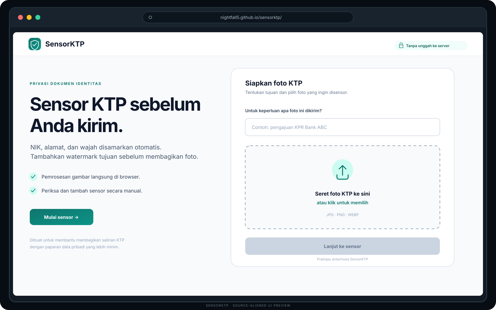
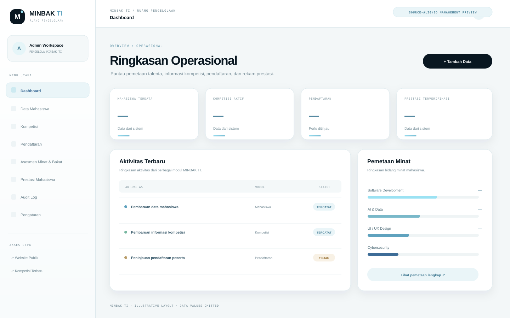
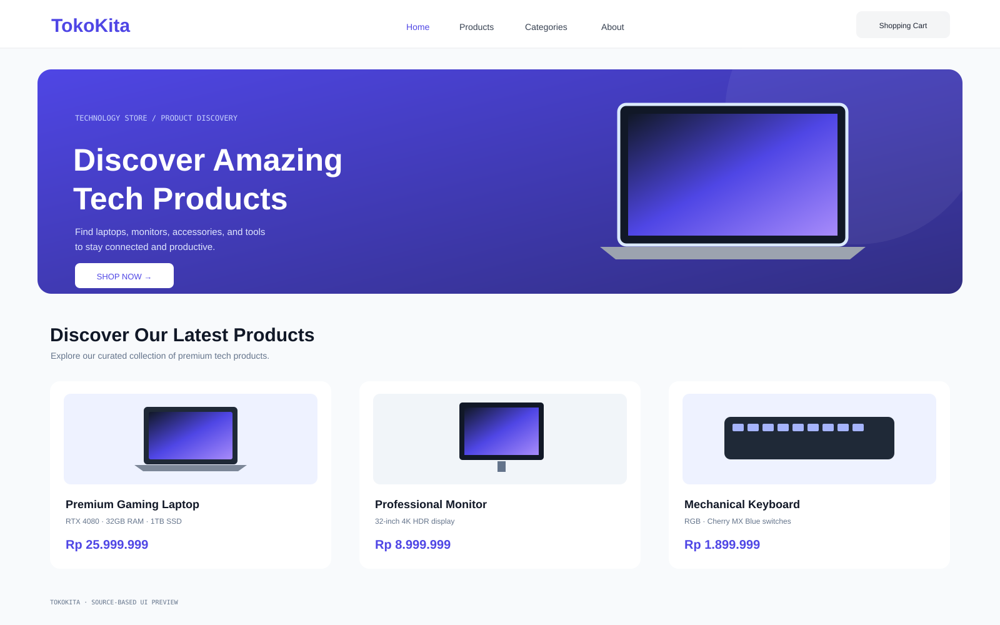
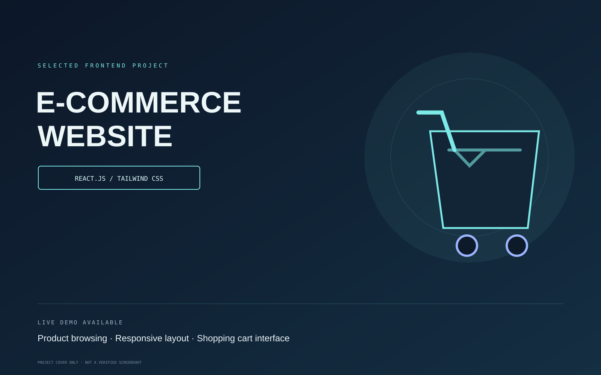
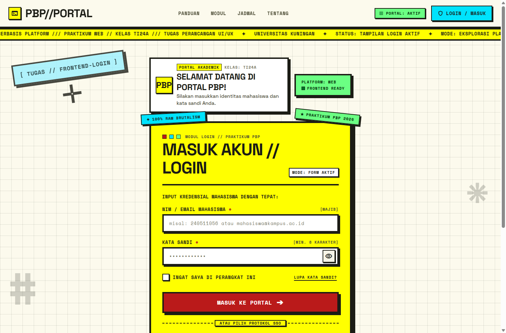
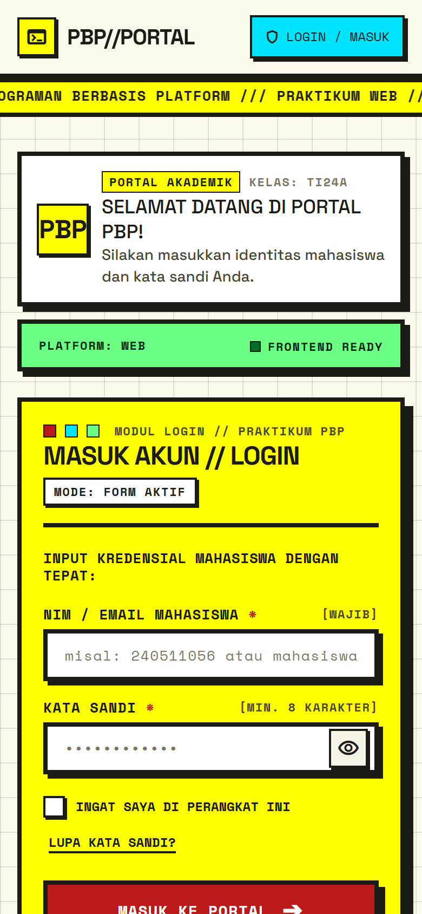

01
Frontend
Responsive interfaces and component-based application experiences.
I'm Rayhan Adhyfa Firdaus — I design and build responsive web applications, connect APIs, and turn practical problems into software people can use.
I enjoy turning ideas and everyday workflow problems into clear, reliable web experiences.
I work across frontend interfaces, backend logic, REST APIs, and data integration. My focus is not just making a page look good, but making the whole experience understandable, responsive, and useful.
Browse my repositories ↗
Informatics Student · Indonesia
A practical toolkit for building interfaces, application logic, integrations, and maintainable software.
Responsive interfaces and component-based application experiences.
Application logic, service endpoints, and server-side workflows.
Structured data, file handling, and real-time application events.
Iterative development, version control, and application verification.
A selection of applications, interfaces, and experiments. Each project is a chance to solve a real problem and learn something new.

BROWSER UI PREVIEW · SENSOR KTPA browser-based privacy tool that helps people prepare safer copies of Indonesian identity cards before sharing them.
OCR-assisted detection helps locate a 16-digit NIK and address text. Face detection is attempted where the browser supports it. Review every suggested region, add manual redactions, choose solid black or blur, and export a purpose-and-date watermarked JPEG. Selected images are processed in the browser, not uploaded to an application server.
 DASHBOARD DESIGN PREVIEW · SAMPLE DATA
DASHBOARD DESIGN PREVIEW · SAMPLE DATAAn offline-first academic workspace for organizing courses, assignments, materials, notes, schedules, and deadlines.
Includes Grid, List, and Kanban task views, interactive calendar, course-linked materials, statistics, data backup, and deadline alerts with browser notifications and synthesized audio.


MANAGEMENT HUBPlatform for student interest mapping, competition information, participant registration, and achievement records.
Public website and internal Management Hub for student records, competition operations, registration review, assessment workflows, achievement verification, and audit logs. The latest redesign introduces a light Denty-inspired interface and a branching Talent Network visual on the homepage.
 ACTUAL WEBSITE SCREENSHOT · LUXU LIVE
ACTUAL WEBSITE SCREENSHOT · LUXU LIVEPremium fragrance landing page featuring the LUXU brand, fragrance collection, product highlights, testimonials, and contact sections.
I led the team and contributed to page structure, content layout, responsive interface, and interactive details. The preview above is an actual screenshot of the deployed LUXU homepage, not a recreated mockup.

SOURCE-BASED UI PREVIEW · TECH STOREReact storefront for browsing technology products, including laptops, monitors, keyboards, and accessories.
Source implements Home, Products, Categories, and About pages, product filtering, cart drawer, wishlist, comparison controls, and Supabase service integration. The app UI identifies the store as TokoKita.

PROJECT COVER · LIVE DEMOSimple e-commerce website built with React.js and Tailwind CSS, focused on product browsing, navigation, and a shopping-cart interface.
Live demo is linked below. This cover is not presented as a screenshot because the deployed page could not be retrieved for visual verification.


ORIGINAL REPOSITORY SCREENSHOTS · DESKTOP + MOBILEStudent login-page implementation using a Neo-Brutalist visual approach, with a focus on form clarity, validation, and responsive behavior.
Includes NIM/email and password validation, password visibility control, and separate desktop/mobile layouts. Google and GitHub SSO buttons are visual mockups, not connected authentication.
A small arcade experiment built from scratch. Dodge incoming asteroids, collect glowing energy, and chase your personal best. No downloads, no account — just play.
Launch Orbit Breaker PLAYABLE MINI GAME ↗
PLAYABLE MINI GAME ↗
I'm continuously improving my craft and exploring new ways to build useful software. Explore my projects or connect with me on GitHub.
Connect on GitHub